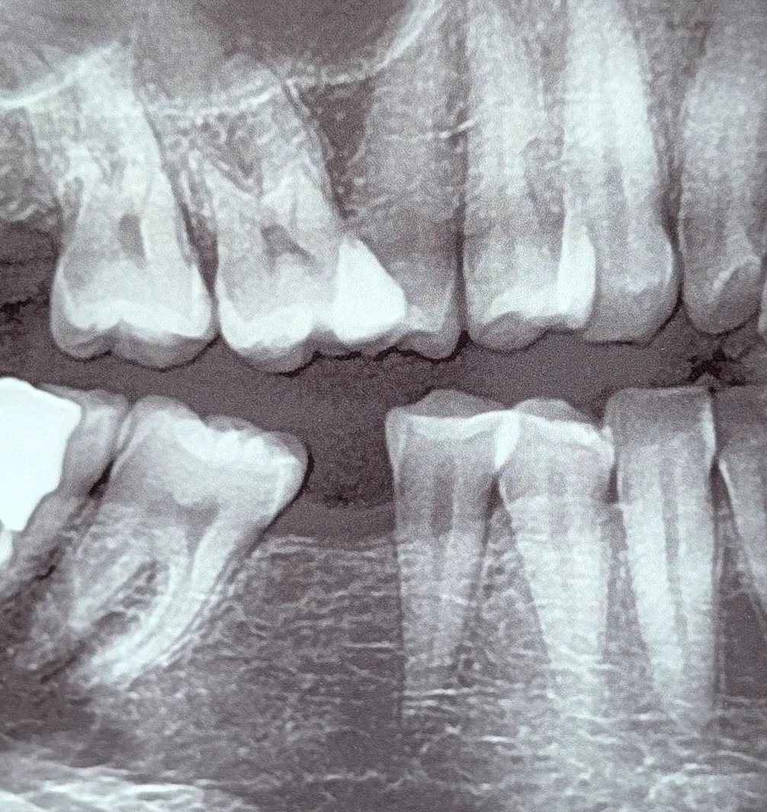

Chairside 03
ایمپلنت و فقدان قدیمی مولر مندیبل؟

بیمار برای جایگزینی دندان از دسترفته مراجعه کرده بود. میگفت در کودکی این دندان را از دست داده و حالا به فکر جایگزینی آن افتاده است.
سؤالهای اولیه ساده بود: مشکل زیبایی داری؟ نه. در جویدن غذا مشکلی داری؟ نه.
در معاینه، فضای بیدندانی قدیمی در ناحیه مولر مندیبل دیده میشد. سوپراایراپشن دندان مقابل بسیار خفیف بود و دندانهای اطراف فقط تغییرات جزئی داشتند؛ در حدی که هیچ اثر معنیداری روی اکلوژن، فانکشن یا گیر غذایی ایجاد نکرده بود.
این کیس بیشتر از آنکه «مشکل» باشد، یک وضعیت قدیمیِ تثبیتشده بود؛ چیزی که اگر قرار بود از کنترل خارج شود، معمولاً سالها قبل خودش را نشان میداد.
جایگزینی دندان، مسیر سادهای نداشت. با توجه به وضعیت استخوان، احتمال نیاز به پیوند مطرح بود. و با وجود تیلت خفیف دندان خلفی، اگر بخواهیم بدون اصلاح وارد بازسازی شویم، ریسک گیر غذایی و طراحیهای پرچالشِ پروتزی بالا میرود.
در شرایطی که بیمار نه مشکل عملکردی دارد و نه شکایت زیبایی، ورود به این مسیر لزوماً به معنای بهبود کیفیت زندگی نیست.
به بیمار توضیح داده شد که طی این سالها تغییرات بسیار محدود بوده و این فقدان دندان اثر قابلتوجهی بر سیستم جونده او نگذاشته است؛ پس در حال حاضر، دست نزدن میتواند منطقیترین انتخاب باشد.
کنار یونیت، گاهی درمان در «اضافه کردن» خلاصه نمیشود؛ بلکه در حفظ ثباتی است که هنوز مختل نشده است.